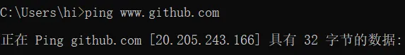

CDN绕过
1.什么是CDN?
CDN的全称是Content Delivery Network，即内容分发网络。CDN是构建在现有网络基础之上的智能虚拟网络，依靠部署在各地的边缘服务器，通过中心平台的负载均衡、内容分发、调度等功能模块，使用户就近获取所需内容，降低网络拥塞，提高用户访问响应速度和命中率。但在安全测试过程中，若目标存在CDN服务，将会影响到后续的安全测试过程。
2.如何判定目标存在CDN？
1.超级ping-最简单
http://ping.chinaz.com/ 结果一致说明没有CDN
还有一种情况，网站在设置域名访问解析的时候设置了www和*前缀，这样xyz.com和www.xyz.com就会访问同样的站点，但是在设置CDN的时候，管理员只设置了www.xyz.com，没有设置xyz.com，所以此时ping xyz.com就可能直接得到原站的IP
2.get-site-ip.com
直接输入域名即可，结果不一定准确
3.nmap
Namp -O IP,是CDN结果会提示非PC,不一定
4.IP重定向主域否
比如ping github

访问ip之后会重定向到github，就证明存在CDN
.png)
但若直接到主域，证明该IP不是CDN
.png)
PS: 若找到源 IP 但它却不呈现网页
.png)
可以使用诸如naabu、nmap工具，扫描开放的端口
5.Wappalyzer插件
有cdn会直接显示
-1716054716524-6.png)
3.绕过技术
1.子域名查询
直接各查询即可网站
Dnsdb.io
2.邮件服务查询
尽一切方法让对方发送邮件给你，然后查看邮件的网页源代码，里面会隐藏源站IP
例如注册账号时会发送邮件，这时就ok了
更多-> 显示源信息 -> 搜索(Ctrl+F) -> 关键字“Received”
.png)
3.国外地址请求-比较麻烦
全球很多国家地区，有可能一些地区并没有做到CDN保护，进行ping就能得到真实地址
1.Tools.ipip.net/cdn.php
2.类似超级ping，但是是不同国家的服务器
asm.ca.com/en/ping.php
3.设置不同的节点进行ping
4.遗留文件
进行路径扫描，发现一些敏感文件，比如phpinfo.php
5.扫描全网
1.fofa、shodan、zoomeye搜索
1. shodan搜索指定文件hash
Python2代码：
import mmh3 #安装失败要先下载安装Microsoft visual c++ 14.0
import requests
response=requests.get(‘http://www.xx.com/favicon.ico‘)
favicon=response.content.encode(‘base64’)
hash=mmh3.hash(favicon)
print ‘http.favicon.hash:’+str(hash)
然后在shodan搜索http.favicon.hash:str(hash)即可
2.fuckcdn、w8fuckcdn、zmap
1.w8fuckcdn-不太准
github.com/boy-hack/w8fuckcdn
2.fuckcdn
3.zmap-环境要求比较复杂
6、dns历史记录
https://x.threatbook.cn/ 查询历史记录，不一定准确，有可能查询到的IP是网站之前的地址，但现在网站换了一个地方
Securitytrails.com/domain/www.baidu.com/history/a
Dnsdb.io
7.以量打量-ddos
大量数据请求将CDN的流量耗光，之后请求的就是真实网站的IP了
4.如何辨别哪一个是真实的IP？
以上各种方法进行查询时可能会得到不一样的结果，这时候就需要进行辨别
1.网站地区与IP所属地进行比较
网站最下端都有备案号和地区，如果此地区与其中IP所属地一致，则大致是了
总部办公地区一般也是源站地区
2.修改本地hosts文件
修改网站域名指向IP地址，如果能够正常访问，则为真（要结合方法1）